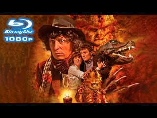
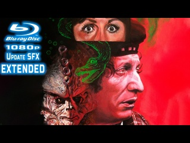
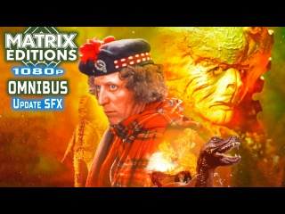
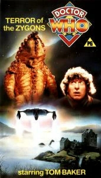
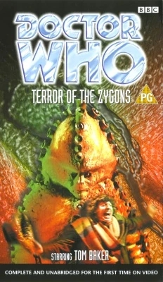
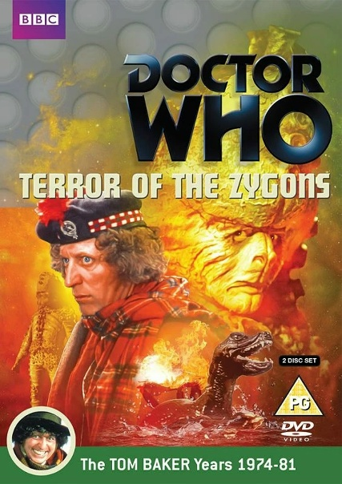
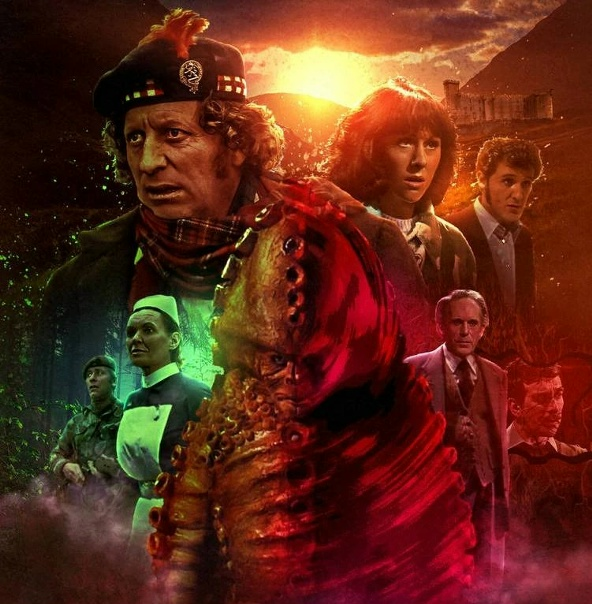
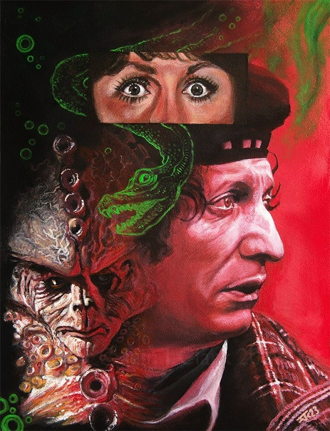
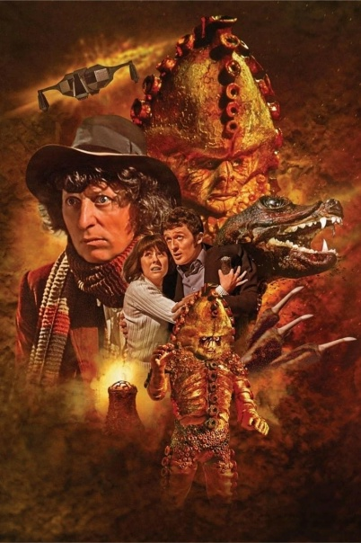

помощник

помощник
Субтитры: Русские и Английские |  |
|---|---|
+ версия с обновленными спецэффектами (эпизоды 2, 4) 2013 + Расширенная версия (эпизод 1) Субтитры: Русские и Английские |  |
с обновлением визуальных эффектов (cunningmunki) Субтитры: отсутствуют |  |
Terror of the Zygons
Дата выхода: 30 августа - 20 сентября 1975
Формат: 4 эпизода по 25 мин.
| | помощник | помощник |
ТАРДИС приземляется в Шотландии: в Северном море рушатся нефтяные вышки, а вокруг озера Лох‑Несс нарастает тревога. Доктор, Сара Джейн и Гарри объединяются с ЮНИТ — Бригадиром и Бентоном — чтобы разобраться с угрозой, которая умеет принимать чужие облики. Враг может оказаться кем угодно, и каждое новое лицо вызывает подозрение. Дебют зайгонов — расы, чья способность менять облик задаёт истории параноидальный тон, а связь с легендой о Лох‑Несском чудовище делает серию особенно атмосферной.
 VHS (фильм) - ноябрь 1988 |  VHS (эпиз.) - июнь 1999 |
|---|---|
 DVD - 30 сентября 2013 |  Blu-ray - 20 октября 2025 * Версия в нашей группе |


